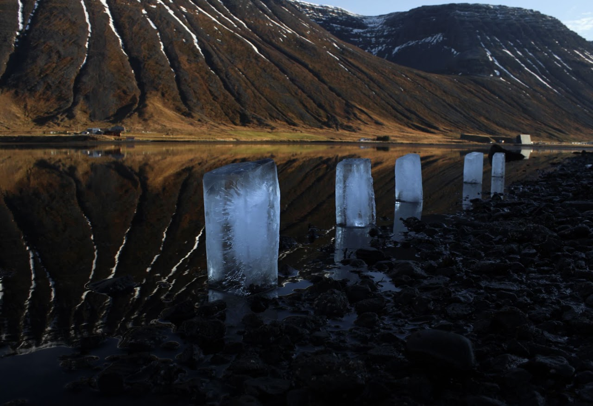
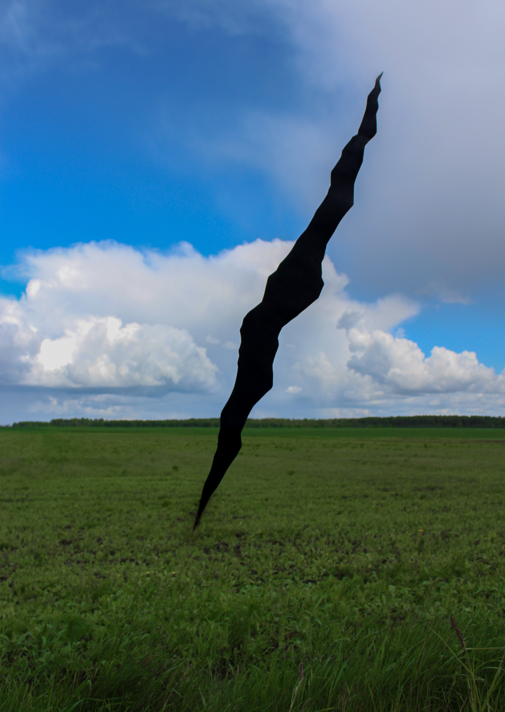

THE RIFT
2022 · Vegeriai village, Lithuania · The work was done within the project "Landart and Archeology: New Synergies Across Borders" · Curator Olena Afanasieva
Concept
When I woke up on February 24 to the sound and flash of an explosion outside my window, when my mother told me to "get dressed, the war has begun," my reality cracked This rift is not treated, does not heal. Behind this you can see just the cold, black nothing. Although I inevitably get used to it, it still hurts. Wherever I go, I take it with me. It's like a defect in my eye - even looking at the beautiful, peaceful landscapes of other countries, I still see only this. Materials - black cardboard
